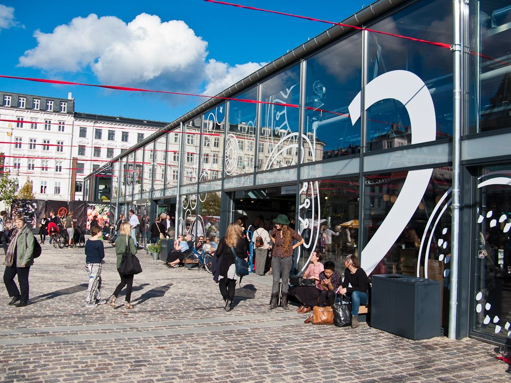
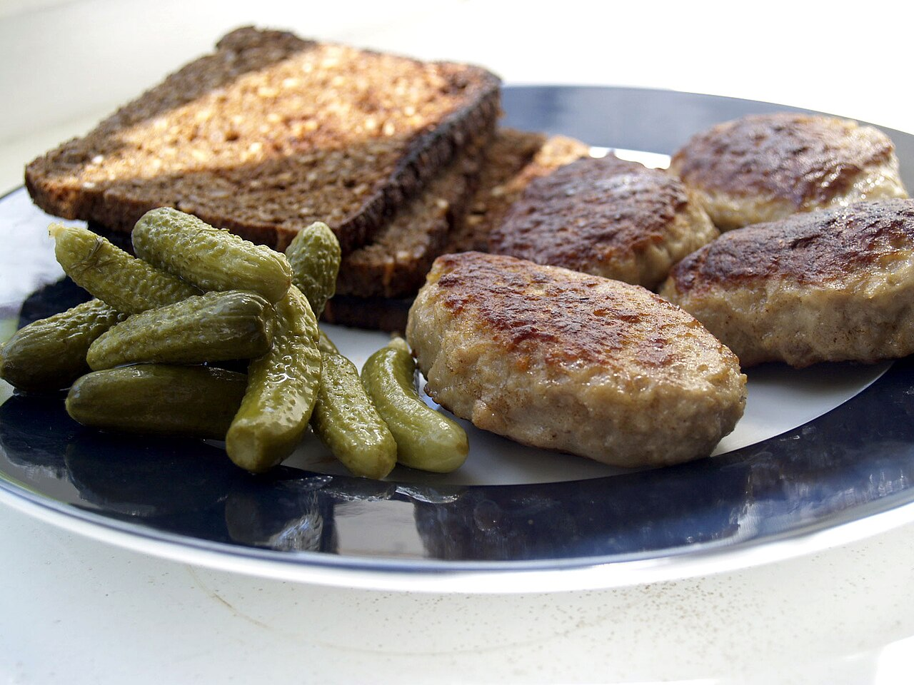
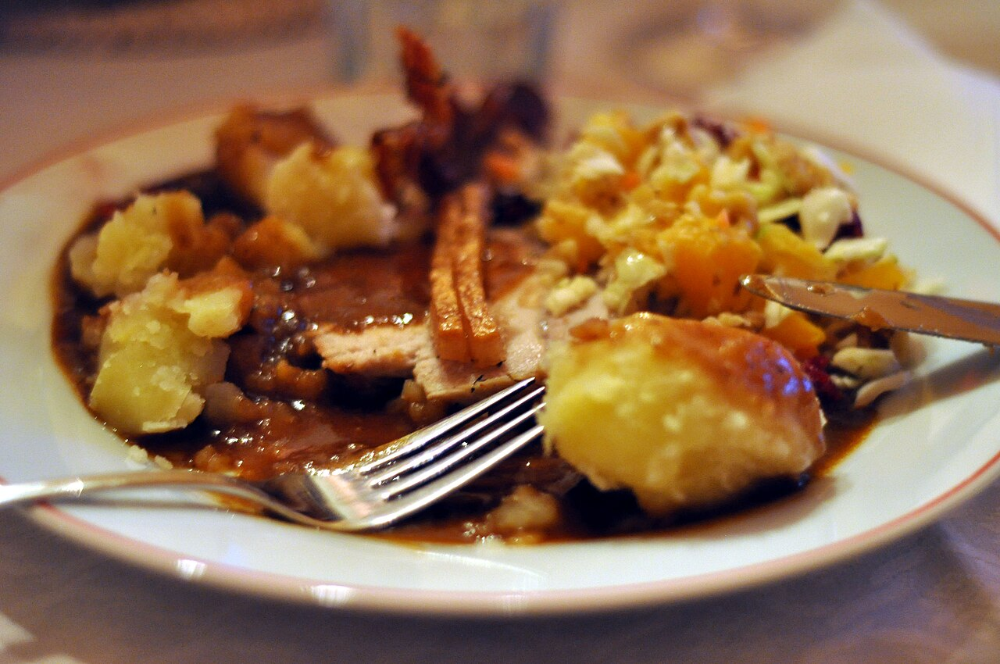
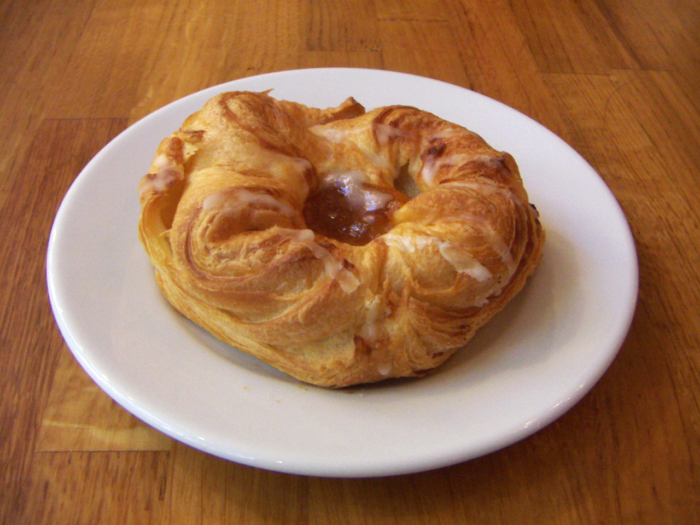
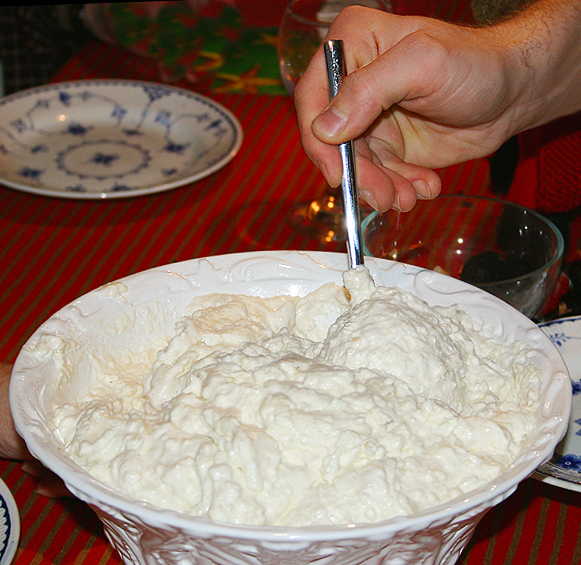
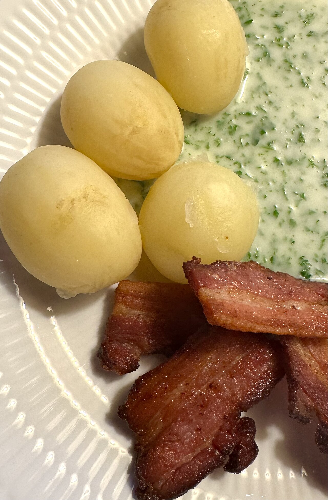

- Visos šios kelionės vietos yra kompaktiškame Kopenhagos centre ir lengvai pasiekiamos pėsčiomis arba metro M2 linija -- automobilio nuomoti nereikia.
- Paskutinę dieną iki skrydžio nuo atvykimo į oro uostą turėsite apie 2 val. 15 min. -- neuždelskite išsiregistravimo iš apartamentų, kad liktų patogus laiko rezervas saugumo patikrai.
- Tarp Nyhavn, Amalienborgo, Rosenborgo ir Torvehallerne galima lengvai vaikščioti pėsčiomis -- atstumai tik 1-2 km.
- Į Deep Purple koncertą Royal Arena geriausia važiuoti metro tiesiai iki Ørestad stotelės; po koncerto grįžtant patariama eiti link Vestamager stotelės, kur būna mažiau žmonių.
1 diena – Atvykimas ir Kopenhagos klasika (Nyhavn, Amalienborg, Rosenborg)
🧭 Dienos maršrutas Google Maps


🍲 Vakarienė: Christianshavns Færgecafé – jauki bodega-kavinė prie kanalo netoli nakvynės, ~24 €/asm. Žemėlapyje
🌧 Planas B (jei blogas oras)
Kodėl: Nyhavno kanalo pasivaikščiojimas ir sargybos keitimo stebėjimas Amalienborgo aikštėje vyksta lauke – vėjuotu ar lietingu metu malonumas minimalus, o Rosenborgo sodo dalis be prasmės lietuje.
1B diena – Vidinė Kopenhaga: Amalienborgo muziejus, Rosenborgo pilis ir Torvehallerne
Bendras persikėlimų laikas: apie 31 min. Diena baigiasi toje pačioje vietoje kaip ir pagrindiniame plane – Torvehallerne.
🧭 1B dienos maršrutas Google MapsPatarimas: Rosenborgo bilietus pirkite iš anksto internetu, kad nereikėtų lauke stovėti eilėje; Amalienborgo muziejaus darbo laikas spalio mėn. kinta, patikrinkite tą pačią savaitę.
2 diena – Christiania, muziejai ir Tivoli
🧭 Dienos maršrutas Google Maps


🌭 Pølsevogn vežimėliai – klasikinė danų dešrelė, ~6 €, greitas užkandis tarp atrakcionų. Žemėlapyje
🍴 Vakarienė: Hooked Christianshavn – neformali vieta su gausiomis porcijomis, ~28 €/asm. Žemėlapyje
🌧 Planas B (jei blogas oras)
Kodėl: Christiania apžiūra vyksta lauke pereinant nuo pastato prie pastato, o vakarinis Tivoli parko vaikštinėjimas tarp pavilijonų taip pat lauke – vėjuotą ar lietingą vakarą malonumas sumažėja, nors viduje yra nemažai dengtų vietų.
2B diena – Thorvaldsenas, muziejai ir Tivoli po stogu
Bendras persikėlimų laikas: apie 11 min. Diena baigiasi toje pačioje vietoje kaip ir pagrindiniame plane – Tivoli parke.
🧭 2B dienos maršrutas Google MapsPatarimas: Thorvaldsens ir Nacionalinis muziejus šeštadienį dirba 10:00–17:00 – laiko turėtumėte užtektinai, bet nevėlinkite ryto pradžios.
3 diena – Kanalų kelionė, Torvehallerne ir Deep Purple koncertas
🧭 Dienos maršrutas Google Maps



🥣 Grød – šilta avižinė košė, ~9 €, gera alternatyva lengvesniems pietums. Žemėlapyje

🌧 Planas B (jei blogas oras)
Kodėl: Tai diena su didžiausia lietaus tikimybe (80%) visoje kelionėje. Kanalų ekskursijos prieplauka yra atvira vietovė, o stiprus vėjas kartais priverčia laivų kompanijas atšaukti ar sutrumpinti keliones; prekyvietė viduje jau ir taip apsaugota, bet geriau turėti vidinę alternatyvą pirmai dienos pusei, kol laukiama vakaro koncerto.
3B diena – Vidinė programa: BLOX architektūros centras, Torvehallerne ir Deep Purple koncertas
Bendras persikėlimų laikas: apie 21 min. Diena baigiasi toje pačioje vietoje kaip ir pagrindiniame plane – Royal Arenoje.
🧭 3B dienos maršrutas Google MapsPatarimas: Jei vis tiek norite plaukti kanalų ekskursija net lyjant – valtys žiemą uždaromis ir šildomomis, tad keliauti galima net ir vidutiniu lietumi; atsisakykite tik jei skelbiamas stiprus vėjo įspėjimas.
4 diena – Atsisveikinimas su Christianshavn ir skrydis namo
🧭 Dienos maršrutas Google Maps


🗺️ Žemėlapis
💰 Biudžeto suvestinė (4 keliautojai)
| Kategorija | Min | Tikėtina | Maks. |
|---|---|---|---|
| Skrydžiai | 457 € | 640 € | 760 € |
| Nakvynė (3 naktys) | 351 € | 438 € | 933 € |
| Maistas | 625 € | 736 € | 900 € |
| Bilietai (Rosenborg, Glyptotek, Tivoli, kanalų kelionė) | 240 € | 319 € | 400 € |
| Deep Purple koncertas | 240 € | 500 € | 1 400 € |
| Iš viso (4 žm.) | 1 913 € | 2 633 € | 4 393 € |
| Vienam asmeniui | 478 € | 658 € | 1 098 € |
Automobilis nenuomojamas – viskas pasiekiama pėsčiomis ir metro, todėl automobilio ir kuro išlaidų nėra.
⚠️ Koncerto bilietus patariame pirkti iš anksto – perpardavimo rinkoje kainos jau kyla, oficialūs bilietai dar prieinami pigiau.
☁️ Orų prognozė
23-10 · Kopenhaga (Christianshavn)
Dulksna, 8.6–11.2°C
Lietaus tikimybė: didelė (apie 8.7 mm kritulių) · Vėjas iki 40 km/h
24-10 · Kopenhaga (Christianshavn)
Kartais lyja, 8.8–12.9°C
Lietaus tikimybė: 40% · Vėjas iki 31 km/h
25-10 · Kopenhaga (Christianshavn)
Dažnai lyja, 9.4–11.7°C
Lietaus tikimybė: 80% · Vėjas iki 29 km/h
26-10 · Grįžtama į Kauną
Kartais lyja, 8.3–11.3°C
Lietaus tikimybė: 40% · Vėjas iki 24 km/h
🎒 Ką pasiimti
- Skysčius (iki 100 ml kiekvienas) sudėkite į vieną permatomą 1 L maišelį rankiniame bagaže.
- Spalio mėn. Kopenhagoje dažnai lyja ir pučia vėjas – rinkitės gerą neperšlampamą striukę, o ne vien skėtį.
- Danijoje atsiskaitoma danų kronomis (DKK), ne eurais – bankomatą ar valiutos keitimą planuokite iš anksto.
- Kadangi automobilis nenuomojamas, visi bilietai ir keliai – per metro/autobusus; atsisiųskite Rejseplanen programėlę iš anksto.
- Koncerto bilietus Deep Purple koncertui laikykite lengvai pasiekiamus telefone ir/ar atsispausdintus.
Dokumentai ir bilietai
Pinigai ir kortelės
Drabužiai orams (8-13°C, lietus, vėjas iki 40 km/h)
Avalynė
Lietui ir vėjui
Elektronika
Kelionės reikmenys
Higiena (skysčiai iki 100 ml)
🍴 Kur pavalgyti
1 diena
Ida Davidsen – netoli Amalienborgo pilies · smėrrebrėdo restoranas-institucija · ~40 €/asm.
Garsiausia smėrrebrėdo vieta Kopenhagoje, veikianti nuo 1888 m. — brangesnė, bet verta paklausti dienos pasiūlymo, kuris dažnai pigesnis nei a la carte meniu. Žemėlapyje
Christianshavns Færgecafé – netoli apartamentų Saint-Nice · tradicinė danų bodega-kavinė · ~24 €/asm.
Jauki, vietinių mėgstama vieta prie kanalo su klasikiniais danų patiekalais ir gyva atmosfera — patogi pirmos dienos vakarienei visai netoli nakvynės. Žemėlapyje
Albatross & Venner – netoli Torvehallerne prekyvietės · kepykla · ~4 €/asm.
Moderni kepykla su klasikiniais ir savitais kepiniais turguje – gera vieta saldžiam wienerbrød užkandžiui ar kavos pertraukai. Žemėlapyje
2 diena
Slotskælderen hos Gitte Kik – netoli Danijos nacionalinio muziejaus · tradicinis smėrrebrėdo restoranėlis · ~20 €/asm.
Nuo 1910 m. veikiantis šeimos restoranėlis netoli Christiansborg, populiarus tarp vietinių — rekomenduojama smėrrebrėdo klasika ir stegt flæsk. Žemėlapyje
Hooked Christianshavn – netoli nakvynės Christianshavn · šeimyninis restoranas (žuvis, europietiška virtuvė) · ~28 €/asm.
Neformali, draugiška vieta su gausiomis porcijomis ir protingos kainos 3 patiekalų meniu — gera alternatyva, jei norisi pertraukos nuo sunkaus danų maisto. Žemėlapyje
Tivoli parko maisto prekystaliai – Tivoli parke · lauko prekystaliai/užkandžiai · ~8 €/asm.
Spalio mėnesį parke gausu moliūgų kepinių ir šiltų obuolių spurgyčių (æbleskiver) — puikus greitas užkandis temstant tarp atrakcionų. Žemėlapyje
Pølsevogn gatvės vežimėliai – Tivoli parke · gatvės maisto vežimėlis · ~6 €/asm.
Klasikinis danų gatvės maistas – įvairių dešrelių vežimėliai aplink Tivoli ir Rådhuspladsen, greitas ir pigus užkandis. Žemėlapyje
3 diena
Hallernes Smørrebrød – Torvehallerne prekyvietėje · turgaus prekystalis (smėrrebrėdas) · ~12 €/asm.
Seniausias ir plačiausią smėrrebrėdo pasirinkimą turintis prekystalis turguje – patogu pietums tarp apsipirkimo. Žemėlapyje
Grød – Torvehallerne prekyvietėje · turgaus prekystalis (avižinė košė) · ~9 €/asm.
Šiltas, pigus ir greitas patiekalas tarp turgaus prekystalių – gera alternatyva, jei norisi ko lengvesnio nei smėrrebrėdas. Žemėlapyje
Rørt – netoli nakvynės Christianshavn · smėrrebrėdo takeaway · ~15 €/asm.
Galima nusipirkti vos 1–3 gabalėlius už prieinamą kainą – patogu, kai prieš išvykimą į Royal Arena koncertą laiko lieka nedaug. Žemėlapyje
Baras
Hviids Vinstue – netoli Nyhavn kanalo (1 diena)
Seniausia Kopenhagos vyno/alaus taverna, veikianti nuo 1723 m. – tamsaus medžio interjeras, žvakių šviesa, griežta taisyklė „be muzikos“ ir sienos nuo Karališkojo teatro aktorių bei menininkų portretų. Vos per kelias minutes pėsčiomis nuo Nyhavn, bet atmosfera – kaip grįžimas 300 metų atgal. Žemėlapyje
🍽️ Ką paragauti

Smėrrebrėdas
Ruginės duonos riekelė su įvairiais priedais – silke, krevetėmis, kiaušiniu, mėsa ar sūriu. Danijos kulinarinis simbolis.
8–20 €Kur paragauti: Ida Davidsen, Slotskælderen hos Gitte Kik, Hallernes Smørrebrød, Rørt

Danų frikadelės
Keptos kiaulienos ir jautienos maltinukai, patiekiami su virtomis bulvėmis, petražolių padažu ar ant ruginės duonos su marinuotais agurkais.
14–19 €Kur paragauti: Slotskælderen hos Gitte Kik, Christianshavns Færgecafé

Keptas kiaulienos kepsnys su traškia odele
Orkaitėje keptas kiaulienos kepsnys su traškia, pasūdyta odele, patiekiamas su karamelizuotomis bulvytėmis ir raudonųjų kopūstų salotomis.
14–20 €Kur paragauti: Christianshavns Færgecafé

Obuolių spurgytės
Apvalūs, purūs blynukai, tradiciškai valgomi rudenį ir per šventes, apibarstyti cukraus pudra ir su uogiene.
5–8 €Kur paragauti: Tivoli parko maisto prekystaliai

Danų vyniotinis
Sluoksniuotos tešlos kepinys su kreminiu, uogienės ar migdolų įdaru – danų versija pasaulyje žinomo „Danish pastry“.
3–6 €Kur paragauti: Albatross & Venner

Ryžių pudingas su migdolais
Šaltas ryžių pudingas su plakta grietinėle, smulkintais migdolais ir šiltu vyšnių padažu – klasikinis rudens/žiemos desertas.
7–10 €Kur paragauti: Christianshavns Færgecafé

Keptas lašinukas su petražolių padažu
Danų gyventojų balsavimu išrinktas neformalus nacionalinis patiekalas – keptos kiaulienos lašinukų riekelės su virtomis bulvėmis ir petražolių padažu.
16–20 €Kur paragauti: Slotskælderen hos Gitte Kik

Danų dešrelė
Gatvės maisto klasika iš „pølsevogn“ vežimėlių – dešrelė bandelėje su garstyčiomis, kečupu ir traškiais svogūnais.
5–7 €Kur paragauti: Pølsevogn gatvės vežimėliai
ℹ️ Praktinė informacija
- ✈️ Skrydis į Kopenhagą
- FR6156 (Ryanair), KUN 09:10 → CPH 09:40, 2026-10-23
- ✈️ Skrydis namo
- FR6155 (Ryanair), CPH 15:15 → KUN 17:45, 2026-10-26
- 🚗 Automobilis
- Nenuomojamas – visa kelionė pėsčiomis ir metro
- 🏠 Nakvynė
- Apartamentai Saint-Nice, Christianshavn (3 naktys)